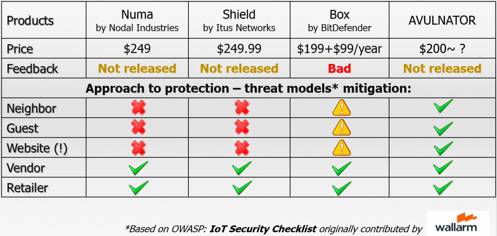

AVULNATOR prototype in action!
Recently, we have presented the first prototype of AVULNATOR ever. The announcement took place at Positive Hack Days conference in Moscow.
Now it is time to publish a bit more information about the first prototype of AVULNATOR to our blog. Additional bonus here is Proof-of-Concept video at the end of the article.
Well, there is no doubts that AVULNATOR is a revolutionary device for home network protection and its prototype should has some touchable appearance. Honestly, its first piece has not incredible design and awesome look yet; however, it looks pretty hardcore right now being packed in our handmade case :)
Speaking about functionality of the AVULNATOR, to use its prototype right now you need just to do the following two steps:
- Connect AVULNATOR to your home router (or to ISP cable, in case you do not use your own router)
- Set up your smart electronic devices to be connected to AVULNATOR’s wireless network
That is all what you need to do. For some smart devices also may be needed to add their models at AVULNATOR’s control panel. Check PoC video at the end of the post to ensure how easy it is.
Since you connected your devices, AVULNATOR starts to protect them against any possible cyberattacks. According to OWASP: IoT Security Checklist originally contributed by Wallarm Inc. experts, AVULNATOR supports all possible threat models considered so far:

It is a very good point. While choosing any sort of protection, one should clearly understand which kind of attacks and threats he is going to mitigate. Protection against highly theoretical threats (like external attack via direct connection to smart electronics) is meaningless, because in more than 99% of cases such attacks are not possible. As a result, there is no reason to pay for this.
Below is Proof-of-Concept video of how the prototype works. There you can see interface of AVULNATOR's control panel and demonstration of its protection in action. Initially, protection is turned off (“Security status” option). Then a public exploit for one of smart devices is used to get root access to the device. Further, we enable security status of AVULNATOR and check exploit again. Enjoy.
AVULNATOR: Proof of Concept video from AVULN Security Industries on Vimeo.